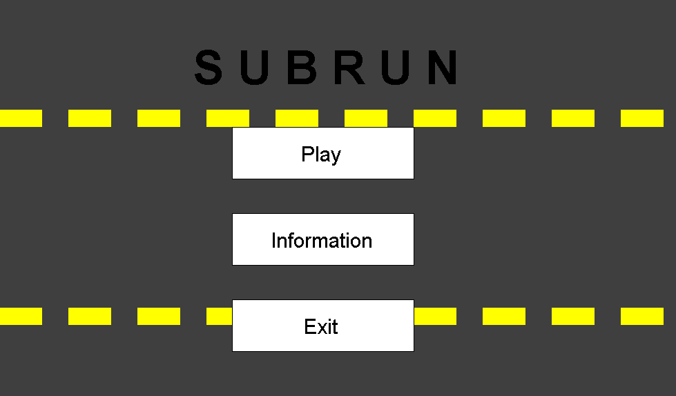
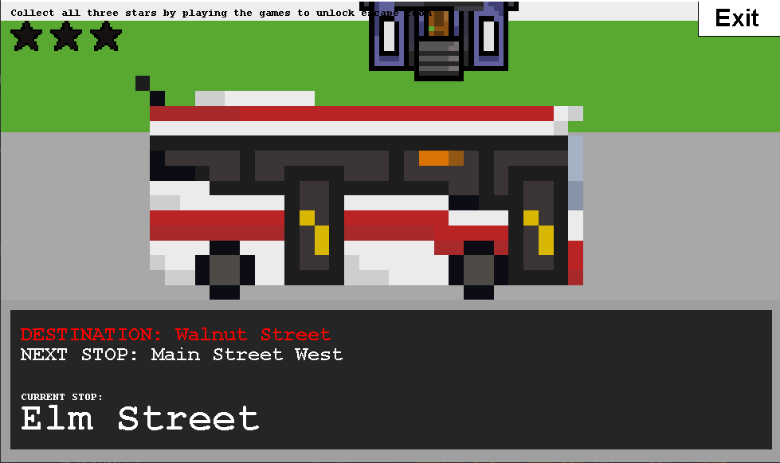

Issues in Urban Development
In many North American cities, transportation is very difficult without a car. For children in their early to mid teens, this is an especially prominent issue as they cannot legally drive. Due to bad urban planning over the past half century, nearly all public services revolve around cars, especially for people living in the suburbs. The nearest store is often 15 minutes away by car, which is over an hour long walk. This offers a few alternatives, such as biking and public transit. However, since infrastructure in these areas is built around cars, there are rarely ever safe bike lanes, and since everyone owns a car, the nearest bus stop is probably a 15 minute walk away and only comes once every 45 minutes.


What is Subrun?
Subrun is a game built for kids aged 10-15 years old to learn about the problems built into their neighbourhoods that are directly dis-servicing them. It also educates them on road safety and the most efficient ways to travel. The game is split into three parts: the learning level, the maze level, and the escape room level. The learning level begins by offering basic information on the issues in car dependent suburbs, and your options for travel as a kid living in this neighbourhood. The maze room then introduces the player to three small minigames with a set goal, allowing them to learn the controls of the game and the quirks of each individual minigame. The escape room expands on the maze room, this time with infinite levels and a harder difficulty.
Difficulties & Contribution
While working on this project, we encountered many difficulties. In the beginning, due to our choice to make our game open-world, we ran into many collision issues because the obstacles were moving into the player, and not the expected player moving into obstacle. We also ran into issues with sprite loading, and had to create our own sprite class to load, rasterize, and scale images for us. Beyond that, work on this project went smoothly. My personal contribution to this project is mainly the assets, having draw about 80%. I also wrote most of the minigames, as well as the dialogue system used to communicate with the NPCs at each minigame in the maze level.
